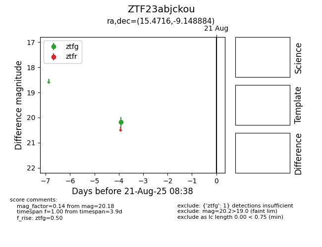

Target ZTF23abjckou at 2025-08-21 08:38, see:
FINK: fink-portal.org/ZTF23abjckou
Lasair: lasair-ztf.lsst.ac.uk/objects/ZTF23abjckou
ALeRCE: alerce.online/object/ZTF23abjckou
alt names
ZTF23abjckou (ztf,alerce)
coordinates:
equatorial (ra, dec) = (15.4716,-9.14888)
galactic (l, b) = (131.2379,-71.85193)
photometry
last ztfg=20.18
1 ztfg detections
